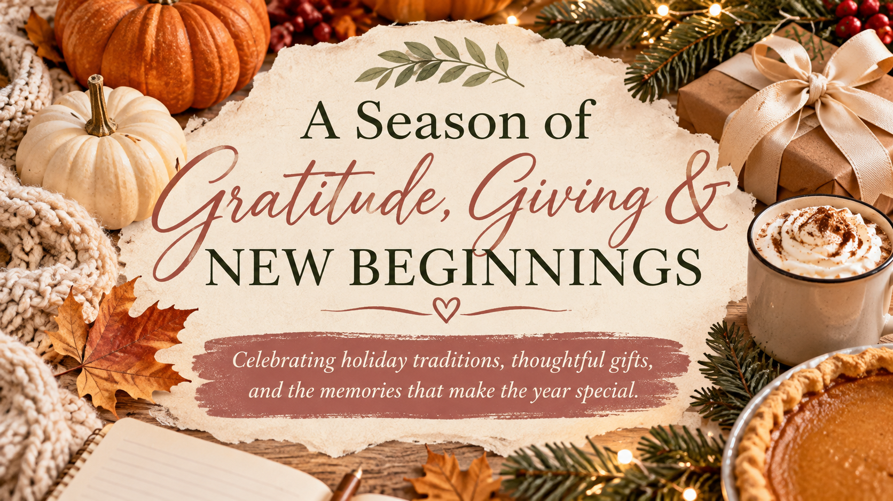
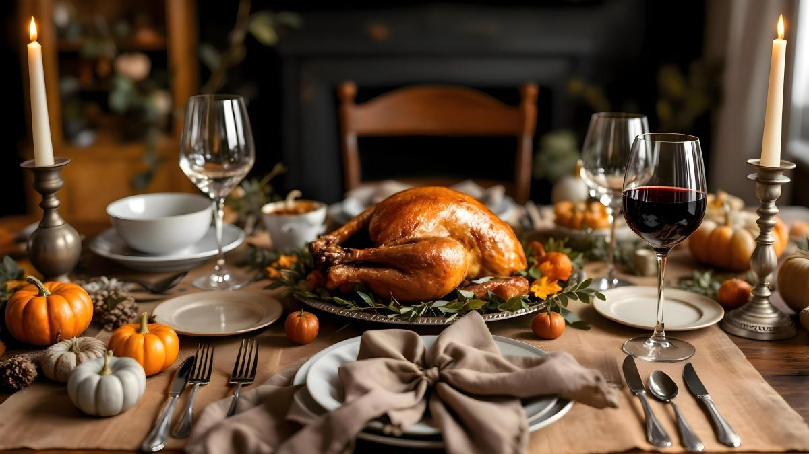

Holiday Season
A Season of Gratitude, Giving & New Beginnings

There is something special about the holiday season. It's the time of year when kitchens fill with familiar smells, homes feel a little cozier, and we find ourselves slowing down to appreciate the people and moments that matter most.
From Thanksgiving dinner and Christmas morning traditions to finding the perfect gifts and reflecting on another year gone by, the holidays give us plenty of reasons to celebrate.
Whether you're planning your holiday menu, searching for thoughtful gifts, or simply taking a moment to reflect, here are a few ways to make this season meaningful.
Food, Family & Holiday Traditions

Some of the best holiday memories happen around the table. Whether it's Grandma's famous casserole, a family recipe passed down through generations, or a new dish you're introducing this year, food has a way of bringing everyone together.
Thanksgiving is the perfect opportunity to enjoy the classics while adding a little something new.
A few ideas to try this holiday season:
- Sweet potato casserole with a brown sugar pecan topping.
- Southern-style macaroni and cheese.
- Honey-glazed carrots with a little cinnamon.
- Homemade cranberry sauce with fresh orange.
- Mini apple pies or cinnamon rolls for a sweet treat.
And let's not forget Christmas morning! There's nothing better than enjoying a delicious breakfast in pajamas before the excitement of opening presents.
Think overnight French toast casserole, homemade cinnamon rolls, breakfast sliders, or a hot cup of coffee with your favorite holiday treat.
The best traditions don't have to be complicated. Sometimes, it's the simplest meals and familiar recipes that become everyone's favorites.
Thoughtful Gift Ideas for Everyone on Your List
Finding the perfect gift isn't always easy, especially when shopping for someone who seems to have everything!
Instead of focusing on expensive presents, think about gifts that are useful, personal, or simply make someone smile. Here are a few ideas for those hard-to-shop-for people:
For the person who has everything:
- Personalized keepsakes.
- A favorite snack or treat basket.
- A cozy blanket and candle set.
- A gift card to their favorite restaurant.
For coworkers and friends:
- Mini self-care baskets.
- Coffee or hot chocolate gift sets.
- Cute desk accessories.
- Personalized tumblers or mugs.
For new homeowners:
- A personalized welcome mat.
- A kitchen essentials basket.
- A cozy throw blanket.
- A beautiful candle or home fragrance set.
Remember, a thoughtful gift doesn't have to come with a big price tag. It's the thought behind it that makes it special.
Looking Back: A Year of Memories & Growth
As another year comes to an end, it's natural to look back at everything that has happened.
The accomplishments, the unexpected changes, the challenges we overcame, and even the little moments that made us smile all played a part in shaping our year.
Take a little time to think about:
- What was your favorite memory this year?
- What accomplishment are you most proud of?
- What new things did you learn?
- Who made a positive difference in your life?
- What challenges helped you grow?
- What are you most grateful for?
Not every year is perfect, and that's okay. Sometimes growth comes from the moments we didn't plan for.
As we look toward a new year, consider setting a few intentions. Maybe it's spending more time with family, starting a new hobby, taking better care of yourself, organizing your home, or finally working toward that goal you've been putting off.
You don't have to have everything figured out. A fresh start is simply another opportunity to keep growing.
Making This Holiday Season Meaningful
At the end of the day, the holidays aren't about having the perfect decorations, the biggest dinner, or the most expensive gifts.
They're about connection, gratitude, traditions, and creating memories with the people we love.
So make that family recipe, wrap that thoughtful gift, take the pictures, laugh a little louder, and enjoy the moments while they're happening.
And before the year comes to a close, don't forget to give yourself credit for how far you've come.